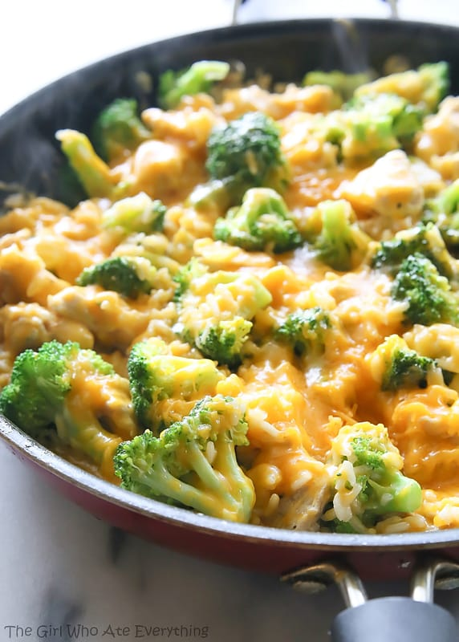

Home
One Pan Cheesy Chicken, Brococli and Rice

Easy, cheesy, loaded dinner, all from ONE pan
Ingridients
- extra virgin olive oil
- medium yellow onion
- boneless chicken
- garlic
- salt and ground pepper
- Chicken broth
- Broccoli
- shredded cheddar cheese
Directions
- sauté onions over medium heat
- increase heat and add chicken
- add garlic and cook for another minute
- add uncooked rice
- add chicken broth
- sprinkle broccoli
- cook for 8 minutes, or until broccoli is tender and rice is done
- sprinke with cheese